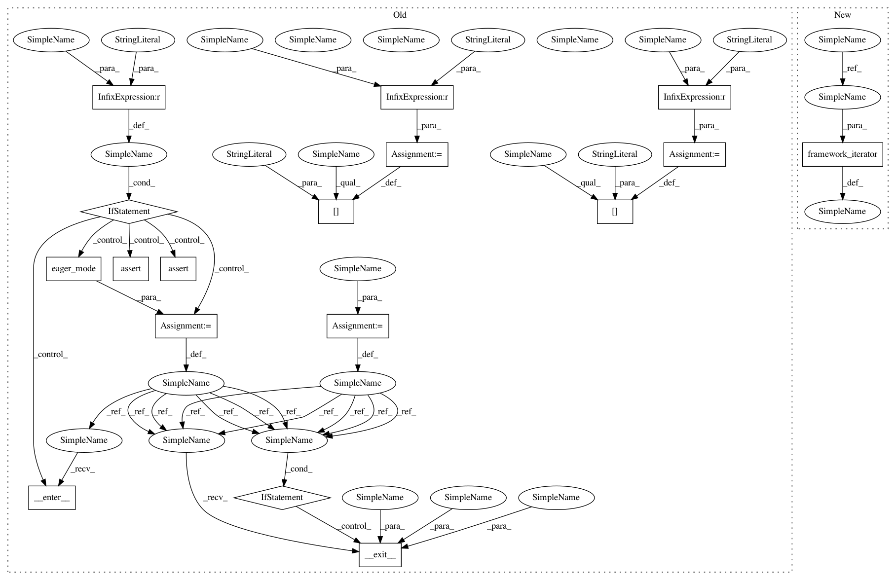

1d4823c0ec446e93d00df8ca654db4b45b63b3d4,rllib/tests/test_model_imports.py,,model_import_test,#Any#Any#Any#,127
Before Change
for fw in ["tf", "torch"]:
print("framework={}".format(fw))
config["use_pytorch"] = fw == "torch"
config["eager"] = fw == "eager"
config["model"]["custom_model"] = "keras_model" if fw != "torch" else \
"torch_model"
eager_mode_ctx = None
if fw == "eager":
eager_mode_ctx = eager_mode()
eager_mode_ctx.__enter__()
assert tf.executing_eagerly()
elif fw == "tf":
assert not tf.executing_eagerly()
agent = agent_cls(config, env)
def current_weight(agent):
if fw == "tf":
return agent.get_weights()["default_policy"][
"default_policy/value/kernel"][0]
elif fw == "torch":
return float(agent.get_weights()["default_policy"][
"value_branch.weight"][0][0])
else:
return agent.get_weights()["default_policy"][4][0]
// Import weights for our custom model from an h5 file.
weight_before_import = current_weight(agent)
agent.import_model(import_file=import_file)
weight_after_import = current_weight(agent)
check(weight_before_import, weight_after_import, false=True)
// Train for a while.
for _ in range(1):
agent.train()
weight_after_train = current_weight(agent)
// Weights should have changed.
check(weight_before_import, weight_after_train, false=True)
check(weight_after_import, weight_after_train, false=True)
// We can save the entire Agent and restore, weights should remain the
// same.
file = agent.save("after_train")
check(weight_after_train, current_weight(agent))
agent.restore(file)
check(weight_after_train, current_weight(agent))
// Import (untrained) weights again.
agent.import_model(import_file=import_file)
check(current_weight(agent), weight_after_import)
if eager_mode_ctx:
eager_mode_ctx.__exit__(None, None, None)
class TestModelImport(unittest.TestCase):
def setUp(self):
ray.init()
ModelCatalog.register_custom_model("keras_model", MyKerasModel)
After Change
agent_cls = get_agent_class(algo)
for fw in framework_iterator(config, ["tf", "torch"]):
config["model"]["custom_model"] = "keras_model" if fw != "torch" else \
"torch_model"
In pattern: SUPERPATTERN
Frequency: 3
Non-data size: 17
Instances
Project Name: ray-project/ray
Commit Name: 1d4823c0ec446e93d00df8ca654db4b45b63b3d4
Time: 2020-04-03
Author: sven@anyscale.io
File Name: rllib/tests/test_model_imports.py
Class Name:
Method Name: model_import_test
Project Name: ray-project/ray
Commit Name: 1d4823c0ec446e93d00df8ca654db4b45b63b3d4
Time: 2020-04-03
Author: sven@anyscale.io
File Name: rllib/tests/test_model_imports.py
Class Name:
Method Name: model_import_test
Project Name: ray-project/ray
Commit Name: 1d4823c0ec446e93d00df8ca654db4b45b63b3d4
Time: 2020-04-03
Author: sven@anyscale.io
File Name: rllib/utils/exploration/tests/test_explorations.py
Class Name:
Method Name: do_test_explorations
Project Name: ray-project/ray
Commit Name: 1d4823c0ec446e93d00df8ca654db4b45b63b3d4
Time: 2020-04-03
Author: sven@anyscale.io
File Name: rllib/policy/tests/test_compute_log_likelihoods.py
Class Name:
Method Name: do_test_log_likelihood